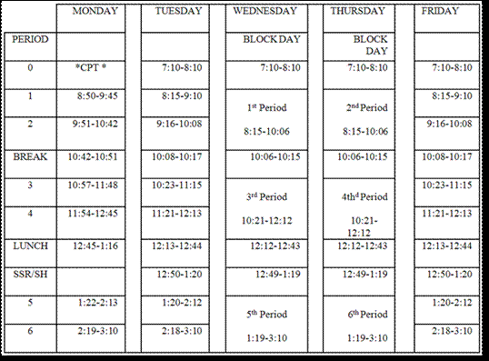
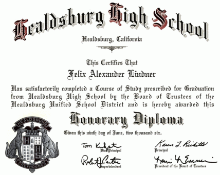
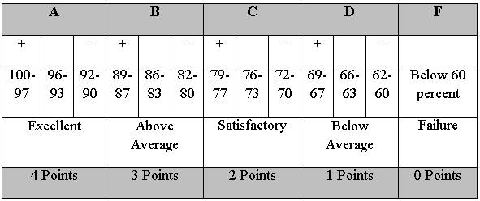
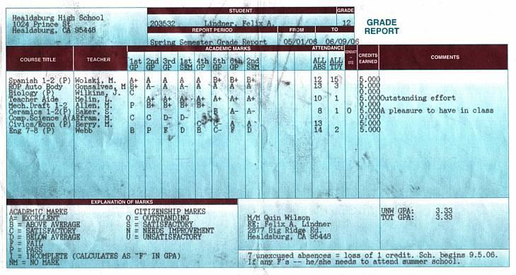
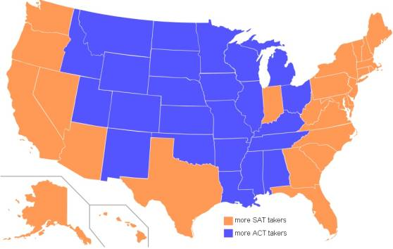

Weitere Datenübertragung Ihres Webseitenbesuchs an Google durch ein Opt-Out-Cookie stoppen - Klick!
Stop transferring your visit data to Google by a Opt-Out-Cookie - click!: Stop Google AnalyticsCookie Info.Datenschutzerklärung
The American high school system:
Facts and evaluation II
Facharbeit aus dem Fach Englisch
School Thesis In The Subject English
am Meranier-Gymnasium Lichtenfels 25.01.2008
In htm codiert und mit Videos ergänzt von Konrad Fischer
Table of contents
1 Introduction
1.1 A preliminary remark
1.2 The Pledge of Allegiance
1.3 The K-12 educational system
1.4 Typical progression of a school career
1.5 Choosing a school
2 The high school system
2.1 School grades
2.2 School organization
2.3 Basic curricular structure
2.4 Graduation requirements
2.5 Advanced Placement Program
2.6 Grading scale
2.7 Standardized testing
2.8 Extracurricular activities
2.9 Associated Student Body
2.10 School uniform
2.11 Students with special needs
2.12 Private or state schools
2.13 Becoming a high school teacher
The high school in the United States is a four-year-program,
”which offers a rigorous course of study aimed at meeting the
academic needs of all the college bound students including vocational
and academic support programs” that are offered as
well. The following table displays how each High School year is named.
The school day consists of seven periods . The year has two semesters
of eighteen weeks each. After every six weeks, a grading period ends,
and students get a progress report that shows their results and grades
up to that point.
At the end of every semester, students receive their report card. This
document reports the grades for the semester that will go on permanent
record, the transcript.
The class sizes are approximately twenty to thirty pupils.
High school students might start school as early as 7:30 a.m., breaking
for lunch around 12:30 p.m. and being dismissed around 2:45 p.m. Others
start around 8:05 a.m. and leave school at 3:15 p.m.
Some high schools try to load Freshmen, Sophomores and Juniors with
seven periods daily, so they will have fewer classes in their senior
year and be able to leave early. That policy is not popular with
students who have jobs or are trying to participate or attend sports events.
Shown below is the bell schedule of Healdsburg High School.

(From the Healdsburg High School Student Handbook 2006/2007)
On Monday , Tuesday, and Friday, there is a normal schedule. Every
Wednesday and Thursday is block schedule, i.e. only periods 1, 3 and 5 and 2, 4 and 6 take place.
It is difficult to understand why periods are exactly 51 or 52 minutes,
instead of 30, 45, or 60 minutes. Ilene Frommer, a counselor from Healdsburg High School, explains:
“We need to have a minimum of a specific amount of teaching time during the year.
So, a schedule is made to include this. This year we decreased the
amount of time to travel between classes so we could have a longer
snack break. However, classes are not required to have a specific amount of time.”
The courses elect are the corresponding periods continuously during the
whole school year, e.g. it does not matter, if a period lasts 60
minutes or 51 minutes, because on that day each subject is given an equivalent amount of time.
Typical Schedule (on a Tuesday)
Twelfth Grade, High School (Student interview )
8:10 a.m. Bell rings. Students have five minutes to get to class.
8:15 a.m. to 9:10 a.m. Bell rings again.
Advanced Algebra/Trigonometry class, 55 minutes including the bulletin.
(Daily announcement) (1st period)
9:10 a.m. Bell rings. Six minutes to get to next class.
9:16 a.m. - 10:08 a.m. Drama, 52 minutes. (2nd period)
10:08 a.m. - 10:17 a.m. Break. Time to eat something.
10:17 a.m. Bell rings. Six minutes to get to next class.
10:23 a.m. - 11:15 a.m. English, 52 minutes. (3rd period)
11:21 a.m. - 12:13 p.m. Multi Media, 52 minutes. (4th period)
12:13 p.m. - 12:44 p.m. Lunch. Students may purchase food from cafeteria or eat food brought from home. 31
minutes.
12:44 p.m. Lunch over. Six minutes to get to class.
12:50 p.m. - 1:20 p.m. SSR, Sustained Silent Reading: a time for students to voluntarily read or do work.
1:20 p.m. - 2:12 p.m. AP Biology, 52 minutes. (5th period)
2:18 p.m. - 3:10 p.m. Civics/ Economy, 52 minutes. (6th period)
3:10 p.m. Bell rings. School is over.
Generally, a typical schedule of a high school student looks like the
one of the interviewed senior, Ben Brock. At the beginning of each
year, a student discusses one´s preferences with his or her
counselor. The counselor then creates everyone’s individual
class schedule. Depending on the size of the school, normally two or
three counselors who are in charge of the students´ classes
are available. This is part of the reason why one class does not solely
consist of students of one single grade. Mostly, mixed
courses with seniors and juniors, or juniors with freshmen or
sophomores or any other combination of the four in one class result from using this method of class creation.
2.3 Basic curricular structure
About the basic curricular structure: In the United States, students in
high school usually “take a broad variety of classes without
special emphasis in any particular subject. Curricula vary widely in
quality and rigidity” depending on the school´s location and its size.
In American High Schools, the amount of offered classes is enormous.
The following list of offered classes is assembled from the Minnetonka High School 2006 Course Catalog:
Art
Introduction on Studio Art; Photography; Watercolor; Painting; Jewelry;
Drawing; Ceramics; Commercial Art and Design; Illustration Art:
History, Animation and Caricature Arts; Art History; AP Art History; AP Studio Art; Video Production
Pillow Talk Humorous Duet Act HDA Illinois IHSA -
A Humorous Duet Act from 1995, performed by Rich Marincic and Kane Farabaugh from Ottawa Township High School
Business
Accounting; Business Law; International Business; Microsoft Office
Applications; Introduction to Business; Personal Financial Management;
Marketing Practices and Principles; Money, Banking and Investing;
Keyboarding; Web Page Design; Sports, Entertainment Marketing and
Management; Computer Technology
School Shooting Daryl
English/ Language Arts
English 9, 10, 11, 12; AP English 12; AP Composition; Fiction and Poetry
Workshop; Professional and Technical Writing; Reading and Study Skills
for Freshmen; College Reading and Study Skills; Theater; Journalism;
Newspaper Production; Speech; Debate; Yearbook
English as a second language
Beginning English; Intermediate English; Advanced English; Science/ Math; Social Studies/ Reading
Family and consumer science
Foods; Culinary Exploration; International Foods; Clothing and
Textiles; Fashion Merchandising and Design; Interior Design (Housing
and Home Furnishings); Independent Living; Child Development; Relationships
Health
Current Health Topics; Connections
Mathematics
General Math; Pre-Algebra; Algebra; Informal Geometry; Geometry; Higher
Algebra; Pre-calculus; Calculus; AP Calculus; Intro to Finite Math,
Finite; AP Statistical; Computer Programming; Computer Science
Music
Varsity Band; Concert Band; Symphonic Band; Wind Ensemble; Chamber
Orchestra; Concert Orchestra; Choristers; Varsity Choir Women/Men;
Concert Choir; Music Theory (AP); Music History
Science
Chemistry; Biology; AP Biology; Environmental Biology: Ecological
Issues; Human Anatomy and Physiology; Earth and Space Systems; Physics;
AP Physics
Social Studies
Principles of US Government, Geography and Economics; Contemporary US
History; World History and Geography; European History AP; Human
Geography AP; US Government and Politics AP; Economics; Current World
Issues; Practical Citizenship; Psychology; Sociology
Technology Education
Introduction to AutoCAD; Mechanical Drafting; Principles of
Engineering, Drafting and Design; Advanced Drafting; Electronics; Audio
Electronics; Communication Electronics; Digital Electronics;
Microcomputer-Interface, Operations and Repair; Graphic Arts; Color
Photo – Graphics; Graphic Design; Airbrush; Metals; Power and
Energy; Woodworking;
OTH 316 - High School Shooting
Tree Hill High School Shooting
Foss High School Shooting
Slymar High School Shooting
Cleveland High School Shooting
School Shootings At Collumbine High School And Virginia Tec
Homevideo from the kid who did the school shooting in Germany
World Languages
French, German, Spanish, Chinese, Japanese, American Sign Language
As you can see, students have plenty of options in arranging their high
school experience. This is one big difference to a German school. In
general, in Germany, a school is limited in terms of quantity of
courses and does not offer such a variety of different subjects.
In the list above, there are many elective courses, like drawing,
orchestra, dancing, International Foods, woodworking, etc. Such courses
are offered in numerous high schools in the United States, although
their availability depends on each school's financial situation and
desired curriculum.
2.4 Graduation requirements
To be eligible for graduation and obtain a high school diploma, one
must pass courses in certain required subjects and meet other
requirements such as completing a total of at least 240 credits.
Course / Years
English / 4
Mathematics / 2
Natural/Physical Science / 2
Additional Courses in Above Areas / 1
Social Science / 2
Additional Academic Courses / 2
(From Minnetonka High School, Minnesota)
As already mentioned, the table above is a minimum sequence of the
requirements for getting a diploma. Students who want to attend a two-
or four-year college or university, usually take more academic or
advanced courses in order to collect more credits and show college
admission directors their academic competence.
Beginning with the Class of 2006, all public school students in
California will be required to pass the California High School Exit
Exam to earn a high school diploma. This new law was “created
by the California Department of Education to improve the academic
performance of California high school students, and especially of high
school graduates, in the areas of reading, writing, and mathematics“ .
As I received my diploma as an exchange student, it is an
“Honorary Diploma” and does not have standard value.

2.5 Advanced Placement Program
An advanced course like the Advanced Placement Program (AP) is an
opportunity for high school students to take college-level courses and
to receive credit for their knowledge and achievement. Each AP course
covers the material that is taught in the corresponding college course.
“Sixty percent of U.S. high schools currently participate in
the AP Program.” In the US, there are currently
thirty-seven different AP courses available. Students can choose from
science, math, the humanities and the social science. The offerings,
however, vary from school to school.
Minnetonka High School in Minnesota, for example, offers the following
Advanced Placement courses: AP United States History, AP European
History, AP Human Geography, AP United States Government and Politics,
AP Psychology, AP Macro-Economics, AP Calculus AB 1 and 2, AP Calculus
BC 1 and 2, AP Statistics 1 and 2, AP Advanced Composition, AP English
Literature, AP Art Studio, AP Music Theory, AP Biology, AP Chemistry and AP Physics.
In Healdsburg High School in California, however, there is only AP
Studio Art, AP English, AP Calculus, AP Biology, AP Spanish, AP
Computer Science, AP U.S. History and AP World History selectable for students.
Such courses cover more material in less time and in more detail than
regular high school courses and provide a challenge for students who
are motivated and interested in working more intensively in their field of choice.
Each AP course has a corresponding exam that students take on a voluntary basis.
AP courses receive additional weighting in G.P.A. (i.e. Grade Point
Average) calculations for all purposes at the high school. Students who
successfully complete an AP course and take the AP exam at the end of
the course receive an additional 1.0 in G.P.A. calculations (i.e.
A=5.0, B=4.0, etc.). Students successfully completing an AP course but
not taking the AP exam would receive an additional 0.5 in G.P.A
calculations (i.e. A=4.5, B=3.5, etc.). Regular grade
calculations will be explained in the following section (2.6).
2.6 Grading scale
During a school year, teachers evaluate student work with letter marks.
These grades are computed to determine a student’s Grade Point Average (G.P.A.).
Every six weeks, students receive a progress report that shows the
progress they achieve in their classes. Commonly the following four-point grading scale is used:

In an exam the number of points a student achieves will be divided by
the total number of possible points and this produces a percent grade
which can be translated to a letter grade. The grading is based on a scale of 0-100 percent.
Pictured below is an example of a grade report card.

2.7 Standardized testing
Throughout their high school career, students will take numerous
standardized tests that will serve the purposes of both, the state
educational departments and interested universities. Students have the
possibility to take either the SAT or the ACT test
or both, depending on what tests the universities they are applying
require. The two tests serve a similar purpose for universities but
differ slightly in their contents and the grading system.
The SAT can be taken as often as wanted. Most pupils take the SAT
Reasoning Test in their junior year so that they have a chance to
improve their scores by the time they have to submit them to their universities of interest.

“Map of states according to preferred exam of 2006 high
school graduates. States in orange had more students taking the SAT than the ACT.”
Like all aptitude tests, the SAT Reasoning Test must also choose a
medium in which to measure intellectual ability. “The SAT is
three hours and 45 minutes long and measures skills in three areas:
critical reading, math, and writing. Although most questions are
multiple choice, students are also required to write a 25-minute essay.”
Those taking the test will receive three scores: a reading score, a
writing score and a math score. Each score ranges from 200 to 800
possible points, so the total test score can be from 600 to 2400 points.
The SAT is used as an indicator of students being ready to do college-level work.
In addition to the SAT Reasoning Test, some schools may require one or
two SAT Subject Tests, which examine the student abilities in a single subject.
Furthermore, students must take some other exams, which are mandatory
like the California High School Exit Exam (CAHSEE) that became
mandatory in 2006. “Its intent is to prod the low-achieving
[…] into making greater efforts to master the
basics.” Every high school student must pass this exam in order to graduate.
Those kids who bail out of high school and then regret not having a
diploma still have a chance to take the GED exam in order to
receive a document that shows their basic skills to prospective
employers. The GED is a federal exam and the rough equivalent of a high
school exit exam. If you pass the GED, it demonstrates that you have as
much basic knowledge as a high school graduate. The GED can help you secure jobs that require a high school diploma.
Throughout the duration of one week the STAR Test is administered to students when they are examined in general subjects
like reading, writing, math and science. This test and its results give
government education departments information about the educational
level of schools in California and make them aware of the educational needs of the state.
Other states examine their students in a similar fashion.
2.8 Extracurricular activities
Extracurricular activities play a very important role in American high schools.
Schools especially attach great importance to sports and dedicate a lot
of effort to them. Several schools within one county compete against
each other in leagues; there is also much competition against schools from different leagues.
The Healdsburg High School, for example, is part of the Sonoma County League and competes against:
Analy High School
Casa Grande High School
El Molino High School
Petaluma High School
Sonoma High School
Windsor High School
Each school has its own symbol or mascot , which they identify with and which represents their school.
In the Healdsburg High School, the following sports are offered:
Fall Sports
Cross Country
Football-Varsity/JV
Tennis (girls)
Volleyball (girls)
Soccer (boys)
Soccer (girls)
Golf (girls)
Winter Sports
Basketball (boys)
Basketball (girls)
Wrestling
These extracurricular activities happen after school. Students practice
two or three hours three to five times a week. During one school year,
students can participate in three different sports, but only in one
sport in fall, one in winter and one in spring. That means, in
Healdsburg High School for instance, it is impossible for boys to
simultaneously play tennis and golf for their school in spring.
School sports are divided into three categories: varsity, junior
varsity (JV) and freshmen. Those categories are defined by competence as well as age.
Varsity sports teams are the principal athletic teams representing
their high school. Junior varsity (JV) teams mostly consist of
sophomores and juniors, and freshmen teams are teams usually reserved for freshmen students.
The following picture shows the Healdsburg High School varsity basketball team of the league 2005/2006.
Dunks basketball humour
In addition to that, there are also some official dances, which are
organized and take place every school year. First comes the Homecoming
Dance in fall, after that Courtesy or Sweethearts in winter, and in spring the famous Prom Dance.
For high school students, Prom is by far the most important dance. Boys
buy tuxedos and girls expensive dresses. Before the dance, it is common
that a group of up to ten students rents a limousine to be driven to a
noble restaurant, have dinner there and then drive to the dance.
2.9 Associated Student Body
The officers of the Associated Student Body (ASB) are elected
by all students, represent their school and make decisions while
considering other students´ interests. In the Healdsburg High School, this association consists of:
President, Vice President, Treasure, Secretary, Rally Commissioner,
Publicity Commissioner, Activity Commissioner, Elections Commissioner and the Student Trustee.
School wide fundraisers, barbeques, rallies and numerous
other school activities are the tasks that the ASB officers facilitate
and supervise during the school year. Those involved in the ASB are
required to balance their academic and extracurricular activities with
responsibility and good judgment while making sure that the school has a comfortable atmosphere.
2.10 School uniform
In 2005-06, 13.8 percent of public schools required students to wear
uniforms, while in 1999–2000, the percentage of principals
who reported that their school required students to wear uniforms was
11.8 percent. Another rise is noticeable when comparing the percentages
of schools that have a strict dress code in 1999-2000 and 2005-06. It rose from 47.4 to 55.3 percent.
2.11 Students with special needs
Students with special needs must have the opportunity to attend an
ordinary high school with its cafeteria, hallways, assemblies etc. This
process is known as mainstreaming. Depending on the severity of their
handicap, those students who require better care can also be enrolled
in county schools or special schools that are only for students with
special needs. As a matter of course, the curriculum for students, who
are mentally or physically disabled, differs from the regular high school curriculum.
2.12 Private or state schools
Parents are always trying to make the best decisions for their
children. When looking at schooling, there are two possibilities to
choose - either a private school or a state school.
State schools, that are provided by state and federal funding, are
offered free of charge. Ninety percent of the children in the United
States attend state schools. On the other hand, private
schools charge tuition and are financed privately by religious
organizations, endowments, grants or charitable donations.
2.13 Becoming a high school teacher
In order to become a high school teacher, teaching credentials are
required. Teachers have to be college graduates and need to have
completed at least a bachelor´s degree, no matter if it is in
the field of education or not. They then apply for a job in school,
serve a probation of two, or mostly three years and then finally will
either be dismissed or hired. High School students need teachers help
them along, academically and in their private lives. They are of an
age, when they are “highly impressionable and at a point
[…] when their actions are beginning to have consequences on the rest of their lives”.